| comparison | alpha | enabled_gene_set_modes | n_biological_rows | n_skipped_rows |
|---|---|---|---|---|
| GC/FL | 0.05 | GO_BP, GO_MF, KEGG, MSIGDB | 4798 | 7582 |
28 Biological Gene-Set Report: GC/FL
29 GC/FL: Biological Gene-Set Structural Report
Note
This report is exploratory and downstream of the structural-inference framework. It summarizes GO, KEGG, and MSigDB/Hallmark gene-set results associated with a single normal–tumor comparison. Biological terms are interpreted as annotations of structurally characterized tumor states, not as the primary evidentiary basis of the framework.
29.1 Report coverage
29.2 Context inventory
| chip | filter_regime | gene_set_mode | engine | n_terms | n_gene_sets | n_significant_complexity | n_significant_entropy_spectral | median_shared_probes |
|---|---|---|---|---|---|---|---|---|
| hu35ksuba | limma | GO_BP | complexity | 663 | 663 | 36 | 0 | 7.0 |
| hu35ksuba | limma | GO_BP | entropy | 663 | 663 | 0 | 197 | 7.0 |
| hu35ksuba | limma | GO_MF | complexity | 243 | 243 | 11 | 0 | 10.0 |
| hu35ksuba | limma | GO_MF | entropy | 243 | 243 | 0 | 75 | 10.0 |
| hu35ksuba | limma | KEGG | complexity | 50 | 50 | 1 | 0 | 17.5 |
| hu35ksuba | limma | KEGG | entropy | 50 | 50 | 0 | 10 | 17.5 |
| hu35ksuba | limma | MSIGDB | complexity | 13 | 13 | 0 | 0 | 29.0 |
| hu35ksuba | limma | MSIGDB | entropy | 13 | 13 | 0 | 7 | 29.0 |
| hu35ksuba | variance_top3000 | GO_BP | complexity | 999 | 999 | 56 | 0 | 8.0 |
| hu35ksuba | variance_top3000 | GO_BP | entropy | 999 | 999 | 0 | 95 | 8.0 |
| hu35ksuba | variance_top3000 | GO_MF | complexity | 365 | 365 | 13 | 0 | 9.0 |
| hu35ksuba | variance_top3000 | GO_MF | entropy | 365 | 365 | 0 | 43 | 9.0 |
| hu35ksuba | variance_top3000 | KEGG | complexity | 53 | 53 | 1 | 0 | 21.0 |
| hu35ksuba | variance_top3000 | KEGG | entropy | 53 | 53 | 0 | 3 | 21.0 |
| hu35ksuba | variance_top3000 | MSIGDB | complexity | 13 | 13 | 0 | 0 | 45.0 |
| hu35ksuba | variance_top3000 | MSIGDB | entropy | 13 | 13 | 0 | 0 | 45.0 |
29.3 Biological result panels
The panels below intentionally separate chips and filtering regimes. Chips are treated as distinct observational systems, and filter regimes are treated as feature-space perturbations rather than interchangeable preprocessing settings.
29.3.0.0.1 Context summary
| engine | n_rows | n_gene_sets | n_significant_complexity | n_significant_entropy_spectral | median_shared_probes |
|---|---|---|---|---|---|
| complexity | 663 | 663 | 36 | 0 | 7.000 |
| entropy | 663 | 663 | 0 | 197 | 7.000 |
29.3.0.0.2 Complexity signal plot
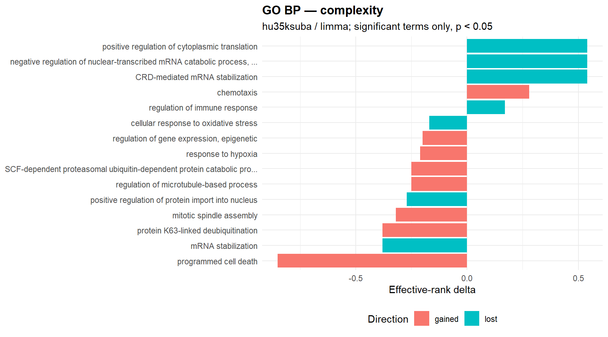
29.3.0.0.3 Entropy signal plot
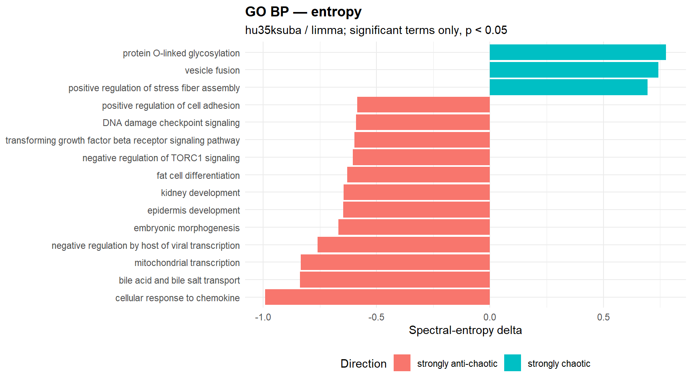
29.3.0.0.4 Significant complexity terms
| gene_set | semantic_block | n_shared_probes | effrank_delta | kappa_delta | direction | p_perm | status |
|---|---|---|---|---|---|---|---|
| mitotic spindle assembly | organelle fission | 11 | -0.320 | 2222.710 | gained | <0.001 | ok |
| cellular defense response | defense response | 5 | 0.130 | -280.440 | lost | <0.001 | ok |
| negative regulation of double-strand break repair via homologous recombination | regulation of cellular response to stress | 7 | -0.120 | -13299.490 | lost | <0.001 | ok |
| antifungal innate immune response | innate immune response | 5 | 0.030 | 690.240 | gained | <0.001 | ok |
| chemical synaptic transmission | chemical synaptic transmission | 11 | 0.020 | 9844.750 | gained | <0.001 | ok |
| mRNA stabilization | mRNA catabolic process | 8 | -0.380 | -4692.890 | lost | 0.010 | ok |
| positive regulation of protein import into nucleus | regulation of cellular localization | 8 | -0.270 | -12733.680 | lost | 0.010 | ok |
| SCF-dependent proteasomal ubiquitin-dependent protein catabolic process | protein catabolic process | 11 | -0.250 | 2339.940 | gained | 0.010 | ok |
| regulation of immune response | regulation of immune response | 6 | 0.170 | -1691.000 | lost | 0.010 | ok |
| axon guidance | cell morphogenesis involved in neuron differentiation | 12 | -0.100 | 499.880 | gained | 0.010 | ok |
| retinol metabolic process | alcohol metabolic process | 5 | -0.070 | 217.560 | gained | 0.010 | ok |
| limb morphogenesis | anatomical structure morphogenesis | 5 | -0.060 | 274.790 | gained | 0.010 | ok |
| regulation of macroautophagy | macroautophagy | 7 | 0.030 | 3192.090 | gained | 0.010 | ok |
| protein K63-linked deubiquitination | protein modification by small protein conjugation or removal | 5 | -0.380 | 301.590 | gained | 0.020 | ok |
| regulation of microtubule-based process | microtubule-based process | 7 | -0.250 | 2066.890 | gained | 0.020 | ok |
29.3.0.0.5 Significant entropy terms
| gene_set | semantic_block | n_shared_probes | spectral_delta | shannon_delta | spectral_direction | p_perm_spectral | p_perm_shannon | status |
|---|---|---|---|---|---|---|---|---|
| bile acid and bile salt transport | lipid transport | 5 | -0.837 | 0.168 | strongly anti-chaotic | <0.001 | NA | ok |
| negative regulation by host of viral transcription | biological process involved in interspecies interaction between organisms | 5 | -0.761 | 0.163 | strongly anti-chaotic | <0.001 | NA | ok |
| embryonic morphogenesis | embryo development | 5 | -0.668 | 0.171 | strongly anti-chaotic | <0.001 | NA | ok |
| epidermis development | tissue development | 7 | -0.648 | 0.161 | strongly anti-chaotic | <0.001 | NA | ok |
| kidney development | kidney development | 6 | -0.646 | 0.169 | strongly anti-chaotic | <0.001 | NA | ok |
| negative regulation of TORC1 signaling | negative regulation of intracellular signal transduction | 9 | -0.605 | 0.171 | strongly anti-chaotic | <0.001 | NA | ok |
| transforming growth factor beta receptor signaling pathway | cellular response to growth factor stimulus | 11 | -0.598 | 0.167 | strongly anti-chaotic | <0.001 | NA | ok |
| DNA damage checkpoint signaling | cell cycle phase transition | 8 | -0.590 | 0.166 | strongly anti-chaotic | <0.001 | NA | ok |
| positive regulation of cell adhesion | positive regulation of cell adhesion | 6 | -0.585 | 0.161 | strongly anti-chaotic | <0.001 | NA | ok |
| telomere maintenance | chromosome organization | 14 | -0.581 | 0.171 | strongly anti-chaotic | <0.001 | NA | ok |
| regulation of mitotic spindle organization | regulation of cytoskeleton organization | 5 | -0.576 | 0.171 | strongly anti-chaotic | <0.001 | NA | ok |
| cellular response to nerve growth factor stimulus | cellular response to growth factor stimulus | 10 | -0.563 | 0.173 | strongly anti-chaotic | <0.001 | NA | ok |
| T cell differentiation | lymphocyte differentiation | 9 | -0.541 | 0.169 | strongly anti-chaotic | <0.001 | NA | ok |
| response to xenobiotic stimulus | response to chemical | 13 | -0.530 | 0.169 | strongly anti-chaotic | <0.001 | NA | ok |
| negative regulation of microtubule depolymerization | cellular component disassembly | 5 | -0.529 | 0.171 | strongly anti-chaotic | <0.001 | NA | ok |
29.3.0.0.6 Terms significant in both engines
| gene_set | semantic_block | n_shared_probes | complexity_effrank_delta | complexity_direction | complexity_p_perm | entropy_spectral_delta | entropy_spectral_direction | entropy_p_perm_spectral | joint_rank_score |
|---|---|---|---|---|---|---|---|---|---|
| mRNA stabilization | mRNA catabolic process | 8 | -0.380 | lost | 0.010 | -0.364 | mildly anti-chaotic | <0.001 | 309.653 |
| protein K63-linked deubiquitination | protein modification by small protein conjugation or removal | 5 | -0.380 | gained | 0.020 | -0.452 | mildly anti-chaotic | <0.001 | 309.352 |
| mitotic spindle assembly | organelle fission | 11 | -0.320 | gained | <0.001 | -0.301 | mildly anti-chaotic | 0.030 | 309.176 |
| regulation of gene expression, epigenetic | chromatin organization | 9 | -0.200 | gained | 0.040 | -0.221 | mildly anti-chaotic | <0.001 | 309.051 |
| programmed cell death | programmed cell death | 6 | -0.850 | gained | 0.040 | -0.562 | strongly anti-chaotic | 0.010 | 3.398 |
29.3.0.0.7 GO semantic clusters
| semantic_cluster_id | semantic_block_name | n_rows | n_terms | n_sig_complexity | n_sig_entropy_spectral | mean_shared_probes |
|---|---|---|---|---|---|---|
| BP_GO_0006402_3 | mRNA catabolic process | 12 | 6 | 3 | 1 | 6.333 |
| BP_GO_0051254_1 | positive regulation of RNA metabolic process | 10 | 5 | 0 | 3 | 56.800 |
| BP_GO_0070647_1 | protein modification by small protein conjugation or removal | 10 | 5 | 0 | 3 | 24.200 |
| BP_GO_1902533_1 | positive regulation of intracellular signal transduction | 10 | 5 | 0 | 3 | 15.400 |
| BP_GO_0006281_1 | DNA repair | 8 | 4 | 0 | 3 | 23.000 |
| BP_GO_0016071_1 | mRNA metabolic process | 6 | 3 | 0 | 3 | 25.000 |
| BP_GO_0045934_1 | negative regulation of nucleobase-containing compound metabolic process | 6 | 3 | 0 | 3 | 61.000 |
| BP_GO_0080135_1 | regulation of cellular response to stress | 14 | 7 | 0 | 2 | 10.429 |
| BP_GO_0035556_4 | intracellular signal transduction | 10 | 5 | 0 | 2 | 10.400 |
| BP_GO_0006351_1 | DNA-templated transcription | 8 | 4 | 0 | 2 | 8.750 |
| BP_GO_0030163_2 | protein catabolic process | 8 | 4 | 1 | 1 | 23.500 |
| BP_GO_0035556_1 | intracellular signal transduction | 8 | 4 | 0 | 2 | 21.750 |
| BP_GO_0098655_3 | monoatomic cation transmembrane transport | 8 | 4 | 0 | 2 | 10.500 |
| BP_GO_0006325_4 | chromatin organization | 6 | 3 | 1 | 1 | 7.000 |
| BP_GO_0006396_1 | RNA processing | 6 | 3 | 0 | 2 | 44.333 |
29.3.0.0.8 Context summary
| engine | n_rows | n_gene_sets | n_significant_complexity | n_significant_entropy_spectral | median_shared_probes |
|---|---|---|---|---|---|
| complexity | 243 | 243 | 11 | 0 | 10.000 |
| entropy | 243 | 243 | 0 | 75 | 10.000 |
29.3.0.0.9 Complexity signal plot
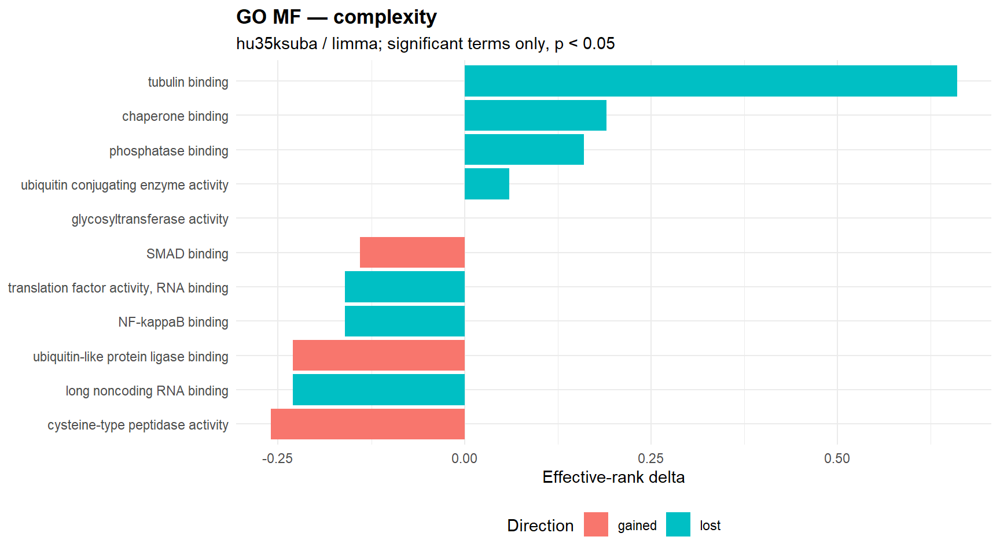
29.3.0.0.10 Entropy signal plot
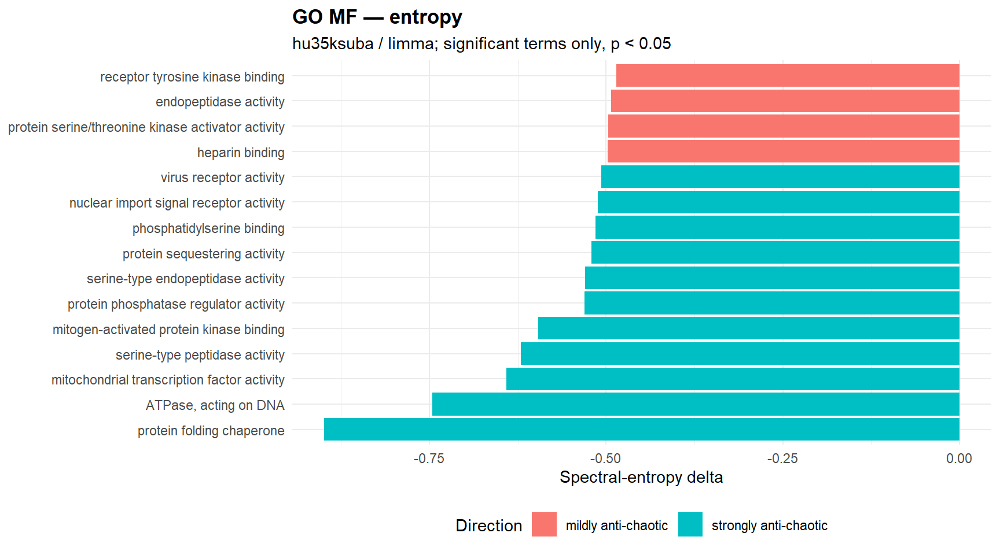
29.3.0.0.11 Significant complexity terms
| gene_set | semantic_block | n_shared_probes | effrank_delta | kappa_delta | direction | p_perm | status |
|---|---|---|---|---|---|---|---|
| ubiquitin-like protein ligase binding | enzyme binding | 6 | -0.230 | 1759.820 | gained | <0.001 | ok |
| chaperone binding | protein binding | 12 | 0.190 | -712.090 | lost | 0.010 | ok |
| NF-kappaB binding | transcription factor binding | 8 | -0.160 | -41329.550 | lost | 0.010 | ok |
| tubulin binding | cytoskeletal protein binding | 5 | 0.660 | -287.210 | lost | 0.020 | ok |
| phosphatase binding | enzyme binding | 7 | 0.160 | -2215.650 | lost | 0.020 | ok |
| ubiquitin conjugating enzyme activity | acyltransferase activity | 7 | 0.060 | -2319.610 | lost | 0.020 | ok |
| translation factor activity, RNA binding | molecular_function | 7 | -0.160 | -3920.930 | lost | 0.030 | ok |
| SMAD binding | protein binding | 13 | -0.140 | 331.090 | gained | 0.030 | ok |
| glycosyltransferase activity | transferase activity | 16 | 0.000 | 192.060 | gained | 0.030 | ok |
| cysteine-type peptidase activity | peptidase activity | 19 | -0.260 | 241.720 | gained | 0.040 | ok |
| long noncoding RNA binding | RNA binding | 8 | -0.230 | -8367.920 | lost | 0.040 | ok |
29.3.0.0.12 Significant entropy terms
| gene_set | semantic_block | n_shared_probes | spectral_delta | shannon_delta | spectral_direction | p_perm_spectral | p_perm_shannon | status |
|---|---|---|---|---|---|---|---|---|
| protein folding chaperone | molecular_function | 7 | -0.899 | 0.172 | strongly anti-chaotic | <0.001 | NA | ok |
| ATPase, acting on DNA | catalytic activity | 6 | -0.746 | 0.170 | strongly anti-chaotic | <0.001 | NA | ok |
| mitochondrial transcription factor activity | molecular_function | 5 | -0.641 | 0.167 | strongly anti-chaotic | <0.001 | NA | ok |
| serine-type peptidase activity | peptidase activity | 9 | -0.621 | 0.169 | strongly anti-chaotic | <0.001 | NA | ok |
| protein phosphatase regulator activity | enzyme regulator activity | 9 | -0.531 | 0.170 | strongly anti-chaotic | <0.001 | NA | ok |
| serine-type endopeptidase activity | peptidase activity | 8 | -0.530 | 0.173 | strongly anti-chaotic | <0.001 | NA | ok |
| phosphatidylserine binding | lipid binding | 6 | -0.515 | 0.171 | strongly anti-chaotic | <0.001 | NA | ok |
| nuclear import signal receptor activity | molecular_function | 7 | -0.512 | 0.170 | strongly anti-chaotic | <0.001 | NA | ok |
| virus receptor activity | protein binding | 12 | -0.507 | 0.164 | strongly anti-chaotic | <0.001 | NA | ok |
| heparin binding | carbohydrate derivative binding | 6 | -0.498 | 0.169 | mildly anti-chaotic | <0.001 | NA | ok |
| protein serine/threonine kinase activator activity | enzyme regulator activity | 9 | -0.497 | 0.171 | mildly anti-chaotic | <0.001 | NA | ok |
| endopeptidase activity | peptidase activity | 17 | -0.493 | 0.171 | mildly anti-chaotic | <0.001 | NA | ok |
| helicase activity | catalytic activity | 19 | -0.484 | 0.171 | mildly anti-chaotic | <0.001 | NA | ok |
| p53 binding | protein binding | 8 | -0.461 | 0.171 | mildly anti-chaotic | <0.001 | NA | ok |
| lyase activity | catalytic activity | 19 | -0.453 | 0.172 | mildly anti-chaotic | <0.001 | NA | ok |
29.3.0.0.13 Terms significant in both engines
No significant warehouse rows available for this section.
29.3.0.0.14 GO semantic clusters
| semantic_cluster_id | semantic_block_name | n_rows | n_terms | n_sig_complexity | n_sig_entropy_spectral | mean_shared_probes |
|---|---|---|---|---|---|---|
| MF_GO_0003723_1 | RNA binding | 10 | 5 | 1 | 2 | 66.200 |
| MF_GO_0008233_1 | peptidase activity | 8 | 4 | 1 | 2 | 23.750 |
| MF_GO_0003677_3 | DNA binding | 8 | 4 | 0 | 2 | 20.500 |
| MF_GO_0008134_2 | transcription factor binding | 6 | 3 | 0 | 2 | 10.333 |
| MF_GO_0019899_3 | enzyme binding | 6 | 3 | 0 | 2 | 28.333 |
| MF_GO_0036094_5 | small molecule binding | 6 | 3 | 0 | 2 | 8.000 |
| MF_GO_0042578_7 | phosphoric ester hydrolase activity | 6 | 3 | 0 | 2 | 13.333 |
| MF_GO_0003824_4 | catalytic activity | 4 | 2 | 0 | 2 | 15.000 |
| MF_GO_0005488_2 | binding | 4 | 2 | 0 | 2 | 41.500 |
| MF_GO_0005515_44 | protein binding | 4 | 2 | 0 | 2 | 137.500 |
| MF_GO_0008134_7 | transcription factor binding | 4 | 2 | 1 | 1 | 20.500 |
| MF_GO_0008233_7 | peptidase activity | 4 | 2 | 0 | 2 | 8.500 |
| MF_GO_0030234_18 | enzyme regulator activity | 4 | 2 | 0 | 2 | 7.500 |
| MF_GO_0008092_4 | cytoskeletal protein binding | 8 | 4 | 1 | 0 | 6.750 |
| MF_GO_0043169_1 | cation binding | 6 | 3 | 0 | 1 | 150.333 |
29.3.0.0.15 Context summary
| engine | n_rows | n_gene_sets | n_significant_complexity | n_significant_entropy_spectral | median_shared_probes |
|---|---|---|---|---|---|
| complexity | 50 | 50 | 1 | 0 | 17.500 |
| entropy | 50 | 50 | 0 | 10 | 17.500 |
29.3.0.0.16 Complexity signal plot
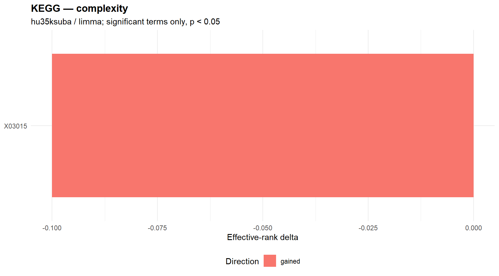
29.3.0.0.17 Entropy signal plot
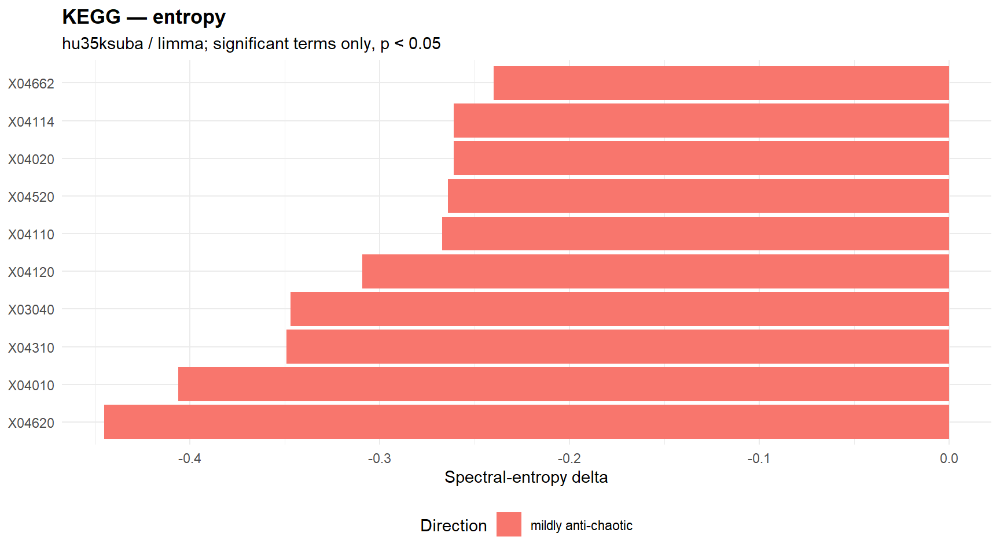
29.3.0.0.18 Significant complexity terms
| gene_set | semantic_block | n_shared_probes | effrank_delta | kappa_delta | direction | p_perm | status |
|---|---|---|---|---|---|---|---|
| X03015 | NA | 20 | -0.100 | 224.540 | gained | <0.001 | ok |
29.3.0.0.19 Significant entropy terms
| gene_set | semantic_block | n_shared_probes | spectral_delta | shannon_delta | spectral_direction | p_perm_spectral | p_perm_shannon | status |
|---|---|---|---|---|---|---|---|---|
| X04620 | NA | 13 | -0.445 | 0.168 | mildly anti-chaotic | <0.001 | NA | ok |
| X04010 | NA | 35 | -0.406 | 0.172 | mildly anti-chaotic | <0.001 | NA | ok |
| X03040 | NA | 41 | -0.347 | 0.171 | mildly anti-chaotic | <0.001 | NA | ok |
| X04520 | NA | 16 | -0.264 | 0.173 | mildly anti-chaotic | <0.001 | NA | ok |
| X04310 | NA | 22 | -0.349 | 0.169 | mildly anti-chaotic | 0.010 | NA | ok |
| X04662 | NA | 16 | -0.240 | 0.172 | mildly anti-chaotic | 0.010 | NA | ok |
| X04120 | NA | 24 | -0.309 | 0.172 | mildly anti-chaotic | 0.020 | NA | ok |
| X04114 | NA | 21 | -0.261 | 0.172 | mildly anti-chaotic | 0.020 | NA | ok |
| X04110 | NA | 17 | -0.267 | 0.172 | mildly anti-chaotic | 0.040 | NA | ok |
| X04020 | NA | 22 | -0.261 | 0.174 | mildly anti-chaotic | 0.040 | NA | ok |
29.3.0.0.20 Terms significant in both engines
No significant warehouse rows available for this section.
29.3.0.0.21 Context summary
| engine | n_rows | n_gene_sets | n_significant_complexity | n_significant_entropy_spectral | median_shared_probes |
|---|---|---|---|---|---|
| complexity | 13 | 13 | 0 | 0 | 29.000 |
| entropy | 13 | 13 | 0 | 7 | 29.000 |
29.3.0.0.22 Complexity signal plot
No significant complexity terms available for plotting.
29.3.0.0.23 Entropy signal plot
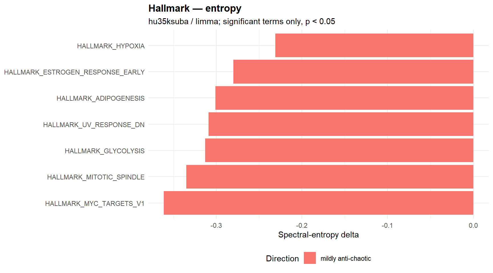
29.3.0.0.24 Significant complexity terms
No significant warehouse rows available for this section.
29.3.0.0.25 Significant entropy terms
| gene_set | semantic_block | n_shared_probes | spectral_delta | shannon_delta | spectral_direction | p_perm_spectral | p_perm_shannon | status |
|---|---|---|---|---|---|---|---|---|
| HALLMARK_MYC_TARGETS_V1 | NA | 45 | -0.361 | 0.172 | mildly anti-chaotic | <0.001 | NA | ok |
| HALLMARK_GLYCOLYSIS | NA | 15 | -0.313 | 0.171 | mildly anti-chaotic | <0.001 | NA | ok |
| HALLMARK_HYPOXIA | NA | 29 | -0.231 | 0.173 | mildly anti-chaotic | <0.001 | NA | ok |
| HALLMARK_MITOTIC_SPINDLE | NA | 49 | -0.335 | 0.170 | mildly anti-chaotic | 0.010 | NA | ok |
| HALLMARK_ADIPOGENESIS | NA | 22 | -0.301 | 0.172 | mildly anti-chaotic | 0.010 | NA | ok |
| HALLMARK_ESTROGEN_RESPONSE_EARLY | NA | 27 | -0.280 | 0.172 | mildly anti-chaotic | 0.010 | NA | ok |
| HALLMARK_UV_RESPONSE_DN | NA | 24 | -0.309 | 0.170 | mildly anti-chaotic | 0.020 | NA | ok |
29.3.0.0.26 Terms significant in both engines
No significant warehouse rows available for this section.
29.3.0.0.27 Context summary
| engine | n_rows | n_gene_sets | n_significant_complexity | n_significant_entropy_spectral | median_shared_probes |
|---|---|---|---|---|---|
| complexity | 999 | 999 | 56 | 0 | 8.000 |
| entropy | 999 | 999 | 0 | 95 | 8.000 |
29.3.0.0.28 Complexity signal plot
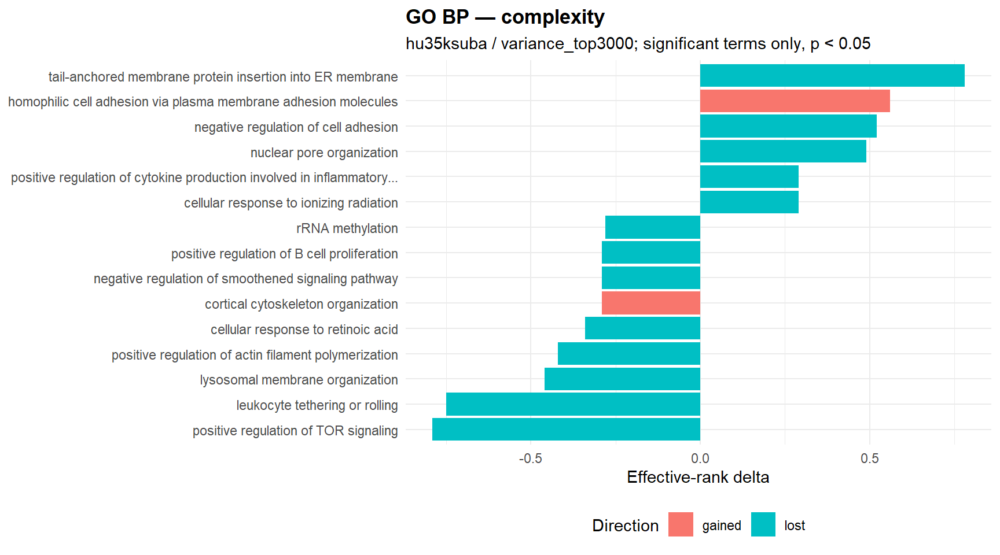
29.3.0.0.29 Entropy signal plot
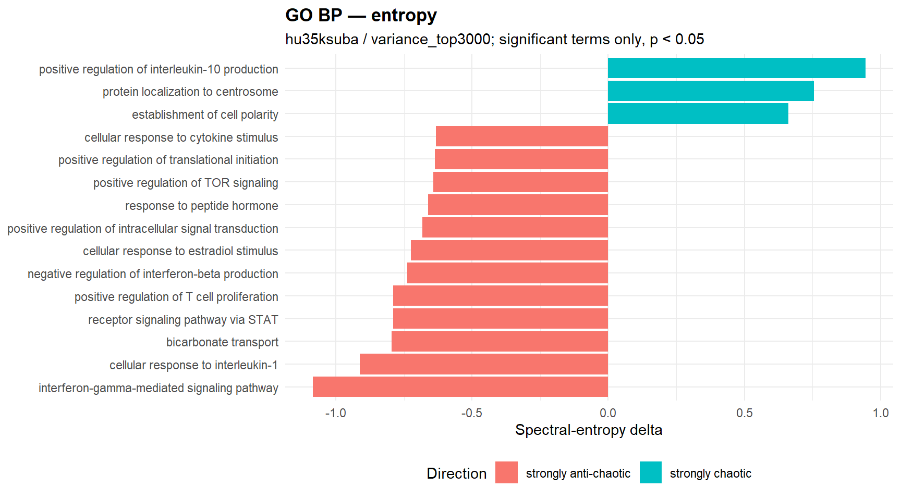
29.3.0.0.30 Significant complexity terms
| gene_set | semantic_block | n_shared_probes | effrank_delta | kappa_delta | direction | p_perm | status |
|---|---|---|---|---|---|---|---|
| positive regulation of TOR signaling | positive regulation of intracellular signal transduction | 5 | -0.790 | -623.010 | lost | <0.001 | ok |
| rRNA methylation | ribonucleoprotein complex biogenesis | 5 | -0.280 | -759.580 | lost | <0.001 | ok |
| response to nicotine | response to chemical | 6 | -0.230 | 1392.650 | gained | <0.001 | ok |
| integrated stress response signaling | cellular response to stress | 8 | 0.160 | -25609.400 | lost | <0.001 | ok |
| cellular response to stress | cellular response to stress | 5 | 0.110 | -411.440 | lost | <0.001 | ok |
| positive regulation of T cell mediated cytotoxicity | lymphocyte mediated immunity | 6 | -0.100 | -1939.660 | lost | <0.001 | ok |
| toll-like receptor 4 signaling pathway | positive regulation of innate immune response | 5 | 0.090 | -195.030 | lost | <0.001 | ok |
| spermatid development | reproductive process | 6 | -0.090 | -692.250 | lost | <0.001 | ok |
| regulation of mitochondrial fission | mitochondrion organization | 6 | 0.080 | -1557.770 | lost | <0.001 | ok |
| post-translational protein modification | post-translational protein modification | 10 | 0.060 | 5241.550 | gained | <0.001 | ok |
| homophilic cell adhesion via plasma membrane adhesion molecules | cell-cell adhesion | 10 | 0.560 | 3045.850 | gained | 0.010 | ok |
| positive regulation of B cell proliferation | positive regulation of lymphocyte activation | 5 | -0.290 | -623.860 | lost | 0.010 | ok |
| positive regulation of cytokine production involved in inflammatory response | positive regulation of cytokine production | 6 | 0.290 | -447.700 | lost | 0.010 | ok |
| collagen fibril organization | cellular component organization | 6 | 0.280 | -628.110 | lost | 0.010 | ok |
| deadenylation-dependent decapping of nuclear-transcribed mRNA | mRNA catabolic process | 12 | -0.240 | 610.010 | gained | 0.010 | ok |
29.3.0.0.31 Significant entropy terms
| gene_set | semantic_block | n_shared_probes | spectral_delta | shannon_delta | spectral_direction | p_perm_spectral | p_perm_shannon | status |
|---|---|---|---|---|---|---|---|---|
| interferon-gamma-mediated signaling pathway | cytokine-mediated signaling pathway | 5 | -1.084 | 0.169 | strongly anti-chaotic | <0.001 | NA | ok |
| positive regulation of interleukin-10 production | positive regulation of cytokine production | 5 | 0.945 | 0.185 | strongly chaotic | <0.001 | NA | ok |
| cellular response to interleukin-1 | cellular response to cytokine stimulus | 12 | -0.913 | 0.167 | strongly anti-chaotic | <0.001 | NA | ok |
| bicarbonate transport | organic anion transport | 5 | -0.796 | 0.169 | strongly anti-chaotic | <0.001 | NA | ok |
| positive regulation of T cell proliferation | positive regulation of cell-cell adhesion | 8 | -0.789 | 0.161 | strongly anti-chaotic | <0.001 | NA | ok |
| negative regulation of interferon-beta production | negative regulation of multicellular organismal process | 6 | -0.738 | 0.165 | strongly anti-chaotic | <0.001 | NA | ok |
| cellular response to estradiol stimulus | cellular response to lipid | 6 | -0.725 | 0.164 | strongly anti-chaotic | <0.001 | NA | ok |
| positive regulation of intracellular signal transduction | positive regulation of intracellular signal transduction | 6 | -0.683 | 0.169 | strongly anti-chaotic | <0.001 | NA | ok |
| response to peptide hormone | response to nitrogen compound | 5 | -0.662 | 0.170 | strongly anti-chaotic | <0.001 | NA | ok |
| cellular response to cytokine stimulus | cellular response to cytokine stimulus | 5 | -0.632 | 0.172 | strongly anti-chaotic | <0.001 | NA | ok |
| cellular response to nerve growth factor stimulus | cellular response to growth factor stimulus | 10 | -0.530 | 0.172 | strongly anti-chaotic | <0.001 | NA | ok |
| organelle transport along microtubule | establishment of organelle localization | 5 | -0.474 | 0.170 | mildly anti-chaotic | <0.001 | NA | ok |
| positive chemotaxis | chemotaxis | 7 | -0.451 | 0.176 | mildly anti-chaotic | <0.001 | NA | ok |
| canonical Wnt signaling pathway | cell surface receptor signaling pathway | 7 | -0.433 | 0.174 | mildly anti-chaotic | <0.001 | NA | ok |
| actin polymerization or depolymerization | actin cytoskeleton organization | 7 | -0.429 | 0.176 | mildly anti-chaotic | <0.001 | NA | ok |
29.3.0.0.32 Terms significant in both engines
| gene_set | semantic_block | n_shared_probes | complexity_effrank_delta | complexity_direction | complexity_p_perm | entropy_spectral_delta | entropy_spectral_direction | entropy_p_perm_spectral | joint_rank_score |
|---|---|---|---|---|---|---|---|---|---|
| Rac protein signal transduction | intracellular signal transduction | 6 | -0.200 | lost | 0.010 | -0.249 | mildly anti-chaotic | <0.001 | 309.653 |
| positive regulation of B cell proliferation | positive regulation of lymphocyte activation | 5 | -0.290 | lost | 0.010 | -0.330 | mildly anti-chaotic | <0.001 | 309.653 |
| positive regulation of TOR signaling | positive regulation of intracellular signal transduction | 5 | -0.790 | lost | <0.001 | -0.643 | strongly anti-chaotic | 0.010 | 309.653 |
| rRNA methylation | ribonucleoprotein complex biogenesis | 5 | -0.280 | lost | <0.001 | -0.298 | mildly anti-chaotic | 0.040 | 309.051 |
| leukocyte tethering or rolling | leukocyte migration | 5 | -0.750 | lost | 0.020 | -0.610 | strongly anti-chaotic | 0.020 | 3.398 |
| protein tetramerization | protein-containing complex assembly | 5 | -0.160 | gained | 0.030 | -0.175 | mildly anti-chaotic | 0.020 | 3.222 |
| lysosomal membrane organization | membrane organization | 5 | -0.460 | lost | 0.020 | -0.441 | mildly anti-chaotic | 0.030 | 3.222 |
| cellular response to ionizing radiation | response to radiation | 6 | 0.290 | lost | 0.020 | 0.319 | mildly chaotic | 0.040 | 3.097 |
29.3.0.0.33 GO semantic clusters
| semantic_cluster_id | semantic_block_name | n_rows | n_terms | n_sig_complexity | n_sig_entropy_spectral | mean_shared_probes |
|---|---|---|---|---|---|---|
| BP_GO_1902532_1 | negative regulation of intracellular signal transduction | 14 | 7 | 1 | 2 | 10.143 |
| BP_GO_1902533_1 | positive regulation of intracellular signal transduction | 12 | 6 | 1 | 2 | 18.667 |
| BP_GO_0007166_1 | cell surface receptor signaling pathway | 14 | 7 | 1 | 1 | 15.857 |
| BP_GO_0006412_2 | translation | 12 | 6 | 0 | 2 | 26.833 |
| BP_GO_0006402_3 | mRNA catabolic process | 10 | 5 | 0 | 2 | 10.800 |
| BP_GO_0035556_4 | intracellular signal transduction | 10 | 5 | 1 | 1 | 10.600 |
| BP_GO_0065003_7 | protein-containing complex assembly | 10 | 5 | 1 | 1 | 7.800 |
| BP_GO_0033554_5 | cellular response to stress | 6 | 3 | 2 | 0 | 11.667 |
| BP_GO_0046907_5 | intracellular transport | 6 | 3 | 0 | 2 | 6.333 |
| BP_GO_0071345_1 | cellular response to cytokine stimulus | 6 | 3 | 0 | 2 | 8.333 |
| BP_GO_0009314_12 | response to radiation | 2 | 1 | 1 | 1 | 6.000 |
| BP_GO_0022613_2 | ribonucleoprotein complex biogenesis | 2 | 1 | 1 | 1 | 5.000 |
| BP_GO_0050900_8 | leukocyte migration | 2 | 1 | 1 | 1 | 5.000 |
| BP_GO_0051251_1 | positive regulation of lymphocyte activation | 2 | 1 | 1 | 1 | 5.000 |
| BP_GO_0061024_5 | membrane organization | 2 | 1 | 1 | 1 | 5.000 |
29.3.0.0.34 Context summary
| engine | n_rows | n_gene_sets | n_significant_complexity | n_significant_entropy_spectral | median_shared_probes |
|---|---|---|---|---|---|
| complexity | 365 | 365 | 13 | 0 | 9.000 |
| entropy | 365 | 365 | 0 | 43 | 9.000 |
29.3.0.0.35 Complexity signal plot
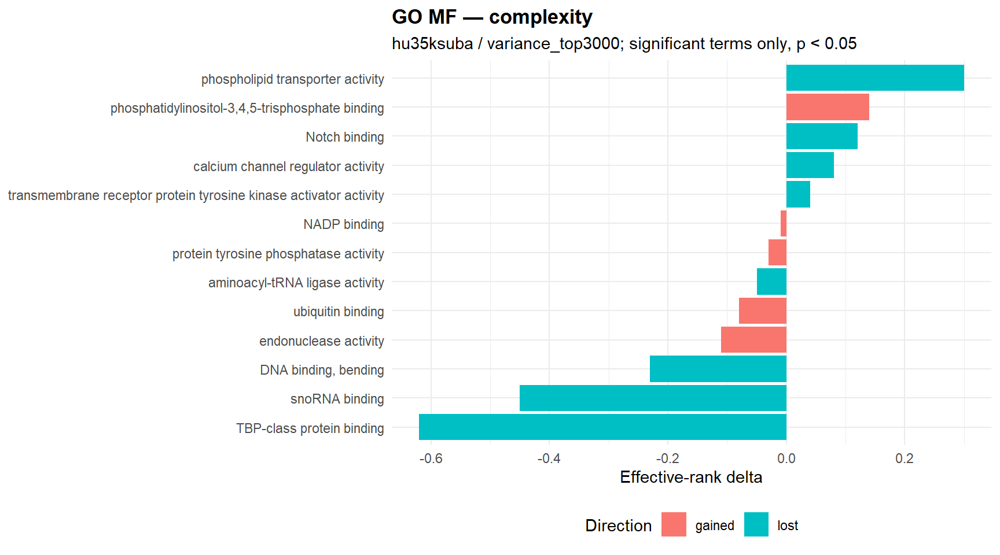
29.3.0.0.36 Entropy signal plot
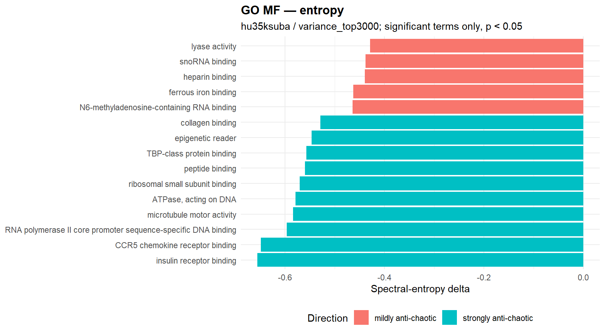
29.3.0.0.37 Significant complexity terms
| gene_set | semantic_block | n_shared_probes | effrank_delta | kappa_delta | direction | p_perm | status |
|---|---|---|---|---|---|---|---|
| TBP-class protein binding | transcription factor binding | 5 | -0.620 | -1227.970 | lost | <0.001 | ok |
| phosphatidylinositol-3,4,5-trisphosphate binding | lipid binding | 5 | 0.140 | 109.770 | gained | <0.001 | ok |
| calcium channel regulator activity | molecular function regulator activity | 5 | 0.080 | -760.820 | lost | <0.001 | ok |
| aminoacyl-tRNA ligase activity | catalytic activity | 8 | -0.050 | -63153.660 | lost | <0.001 | ok |
| protein tyrosine phosphatase activity | phosphoric ester hydrolase activity | 20 | -0.030 | 160.370 | gained | <0.001 | ok |
| ubiquitin binding | protein binding | 16 | -0.080 | 291.420 | gained | 0.010 | ok |
| snoRNA binding | RNA binding | 6 | -0.450 | -345.930 | lost | 0.020 | ok |
| Notch binding | signaling receptor binding | 5 | 0.120 | -295.650 | lost | 0.020 | ok |
| endonuclease activity | catalytic activity | 12 | -0.110 | 704.200 | gained | 0.020 | ok |
| NADP binding | heterocyclic compound binding | 7 | -0.010 | 1168.000 | gained | 0.030 | ok |
| phospholipid transporter activity | transporter activity | 8 | 0.300 | -9724.000 | lost | 0.040 | ok |
| DNA binding, bending | DNA binding | 5 | -0.230 | -153.210 | lost | 0.040 | ok |
| transmembrane receptor protein tyrosine kinase activator activity | enzyme regulator activity | 5 | 0.040 | -362.140 | lost | 0.040 | ok |
29.3.0.0.38 Significant entropy terms
| gene_set | semantic_block | n_shared_probes | spectral_delta | shannon_delta | spectral_direction | p_perm_spectral | p_perm_shannon | status |
|---|---|---|---|---|---|---|---|---|
| CCR5 chemokine receptor binding | signaling receptor binding | 5 | -0.649 | 0.166 | strongly anti-chaotic | <0.001 | NA | ok |
| RNA polymerase II core promoter sequence-specific DNA binding | DNA binding | 5 | -0.597 | 0.170 | strongly anti-chaotic | <0.001 | NA | ok |
| microtubule motor activity | catalytic activity | 8 | -0.584 | 0.170 | strongly anti-chaotic | <0.001 | NA | ok |
| ribosomal small subunit binding | protein-containing complex binding | 7 | -0.571 | 0.171 | strongly anti-chaotic | <0.001 | NA | ok |
| peptide binding | binding | 6 | -0.560 | 0.169 | strongly anti-chaotic | <0.001 | NA | ok |
| ferrous iron binding | cation binding | 6 | -0.463 | 0.165 | mildly anti-chaotic | <0.001 | NA | ok |
| snoRNA binding | RNA binding | 6 | -0.438 | 0.173 | mildly anti-chaotic | <0.001 | NA | ok |
| lyase activity | catalytic activity | 22 | -0.429 | 0.173 | mildly anti-chaotic | <0.001 | NA | ok |
| serine-type peptidase activity | peptidase activity | 10 | -0.423 | 0.172 | mildly anti-chaotic | <0.001 | NA | ok |
| amyloid-beta binding | binding | 9 | -0.389 | 0.167 | mildly anti-chaotic | <0.001 | NA | ok |
| receptor tyrosine kinase binding | signaling receptor binding | 7 | -0.340 | 0.171 | mildly anti-chaotic | <0.001 | NA | ok |
| iron ion binding | cation binding | 16 | -0.338 | 0.167 | mildly anti-chaotic | <0.001 | NA | ok |
| fibronectin binding | protein binding | 7 | -0.323 | 0.175 | mildly anti-chaotic | <0.001 | NA | ok |
| polyubiquitin modification-dependent protein binding | protein binding | 5 | -0.178 | 0.167 | mildly anti-chaotic | <0.001 | NA | ok |
| insulin receptor binding | signaling receptor binding | 5 | -0.656 | 0.168 | strongly anti-chaotic | 0.010 | NA | ok |
29.3.0.0.39 Terms significant in both engines
| gene_set | semantic_block | n_shared_probes | complexity_effrank_delta | complexity_direction | complexity_p_perm | entropy_spectral_delta | entropy_spectral_direction | entropy_p_perm_spectral | joint_rank_score |
|---|---|---|---|---|---|---|---|---|---|
| TBP-class protein binding | transcription factor binding | 5 | -0.620 | lost | <0.001 | -0.557 | strongly anti-chaotic | 0.010 | 309.653 |
| snoRNA binding | RNA binding | 6 | -0.450 | lost | 0.020 | -0.438 | mildly anti-chaotic | <0.001 | 309.352 |
29.3.0.0.40 GO semantic clusters
| semantic_cluster_id | semantic_block_name | n_rows | n_terms | n_sig_complexity | n_sig_entropy_spectral | mean_shared_probes |
|---|---|---|---|---|---|---|
| MF_GO_0005488_1 | binding | 4 | 2 | 0 | 2 | 7.500 |
| MF_GO_0043168_10 | anion binding | 4 | 2 | 0 | 2 | 7.000 |
| MF_GO_0043169_2 | cation binding | 4 | 2 | 0 | 2 | 11.000 |
| MF_GO_0003723_9 | RNA binding | 2 | 1 | 1 | 1 | 6.000 |
| MF_GO_0008134_5 | transcription factor binding | 2 | 1 | 1 | 1 | 5.000 |
| MF_GO_0003677_3 | DNA binding | 8 | 4 | 0 | 1 | 30.750 |
| MF_GO_0003677_5 | DNA binding | 8 | 4 | 1 | 0 | 88.750 |
| MF_GO_0008233_1 | peptidase activity | 8 | 4 | 0 | 1 | 33.750 |
| MF_GO_0008134_2 | transcription factor binding | 6 | 3 | 0 | 1 | 12.667 |
| MF_GO_0036094_5 | small molecule binding | 6 | 3 | 0 | 1 | 8.667 |
| MF_GO_0042578_7 | phosphoric ester hydrolase activity | 6 | 3 | 1 | 0 | 24.000 |
| MF_GO_1901363_1 | heterocyclic compound binding | 6 | 3 | 1 | 0 | 106.333 |
| MF_GO_0003824_13 | catalytic activity | 4 | 2 | 1 | 0 | 15.500 |
| MF_GO_0005102_2 | signaling receptor binding | 4 | 2 | 1 | 0 | 30.500 |
| MF_GO_0005216_1 | monoatomic ion channel activity | 4 | 2 | 0 | 1 | 9.000 |
29.3.0.0.41 Context summary
| engine | n_rows | n_gene_sets | n_significant_complexity | n_significant_entropy_spectral | median_shared_probes |
|---|---|---|---|---|---|
| complexity | 53 | 53 | 1 | 0 | 21.000 |
| entropy | 53 | 53 | 0 | 3 | 21.000 |
29.3.0.0.42 Complexity signal plot
29.3.0.0.43 Entropy signal plot
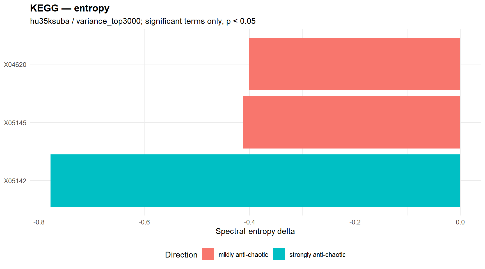
29.3.0.0.44 Significant complexity terms
| gene_set | semantic_block | n_shared_probes | effrank_delta | kappa_delta | direction | p_perm | status |
|---|---|---|---|---|---|---|---|
| X04540 | NA | 13 | 0.100 | -497.640 | lost | 0.030 | ok |
29.3.0.0.45 Significant entropy terms
| gene_set | semantic_block | n_shared_probes | spectral_delta | shannon_delta | spectral_direction | p_perm_spectral | p_perm_shannon | status |
|---|---|---|---|---|---|---|---|---|
| X05142 | NA | 10 | -0.778 | 0.166 | strongly anti-chaotic | <0.001 | NA | ok |
| X05145 | NA | 18 | -0.413 | 0.171 | mildly anti-chaotic | <0.001 | NA | ok |
| X04620 | NA | 16 | -0.402 | 0.166 | mildly anti-chaotic | <0.001 | NA | ok |
29.3.0.0.46 Terms significant in both engines
No significant warehouse rows available for this section.
29.3.0.0.47 Context summary
| engine | n_rows | n_gene_sets | n_significant_complexity | n_significant_entropy_spectral | median_shared_probes |
|---|---|---|---|---|---|
| complexity | 13 | 13 | 0 | 0 | 45.000 |
| entropy | 13 | 13 | 0 | 0 | 45.000 |
29.3.0.0.48 Complexity signal plot
No significant complexity terms available for plotting.
29.3.0.0.49 Entropy signal plot
No significant entropy terms available for plotting.
29.3.0.0.50 Significant complexity terms
No significant warehouse rows available for this section.
29.3.0.0.51 Significant entropy terms
No significant warehouse rows available for this section.
29.3.0.0.52 Terms significant in both engines
No significant warehouse rows available for this section.
29.4 Skipped gene-set summary
| chip | filter_regime | gene_set_mode | engine | reason | n_skipped |
|---|---|---|---|---|---|
| hu35ksuba | limma | GO_BP | complexity | usable gene-set probes below biological admissibility threshold: 2 < 5 | 447 |
| hu35ksuba | limma | GO_BP | complexity | usable gene-set probes below biological admissibility threshold: 1 < 5 | 403 |
| hu35ksuba | limma | GO_BP | complexity | usable gene-set probes below biological admissibility threshold: 3 < 5 | 340 |
| hu35ksuba | limma | GO_BP | complexity | usable gene-set probes below biological admissibility threshold: 4 < 5 | 207 |
| hu35ksuba | limma | GO_BP | complexity | usable gene-set probes below biological admissibility threshold: 0 < 5 | 189 |
| hu35ksuba | limma | GO_BP | entropy | usable gene-set probes below biological admissibility threshold: 2 < 5 | 447 |
| hu35ksuba | limma | GO_BP | entropy | usable gene-set probes below biological admissibility threshold: 1 < 5 | 403 |
| hu35ksuba | limma | GO_BP | entropy | usable gene-set probes below biological admissibility threshold: 3 < 5 | 340 |
| hu35ksuba | limma | GO_BP | entropy | usable gene-set probes below biological admissibility threshold: 4 < 5 | 207 |
| hu35ksuba | limma | GO_BP | entropy | usable gene-set probes below biological admissibility threshold: 0 < 5 | 189 |
| hu35ksuba | limma | GO_MF | complexity | usable gene-set probes below biological admissibility threshold: 2 < 5 | 136 |
| hu35ksuba | limma | GO_MF | complexity | usable gene-set probes below biological admissibility threshold: 1 < 5 | 128 |
| hu35ksuba | limma | GO_MF | complexity | usable gene-set probes below biological admissibility threshold: 3 < 5 | 110 |
| hu35ksuba | limma | GO_MF | complexity | usable gene-set probes below biological admissibility threshold: 4 < 5 | 85 |
| hu35ksuba | limma | GO_MF | complexity | usable gene-set probes below biological admissibility threshold: 0 < 5 | 74 |
| hu35ksuba | limma | GO_MF | entropy | usable gene-set probes below biological admissibility threshold: 2 < 5 | 136 |
| hu35ksuba | limma | GO_MF | entropy | usable gene-set probes below biological admissibility threshold: 1 < 5 | 128 |
| hu35ksuba | limma | GO_MF | entropy | usable gene-set probes below biological admissibility threshold: 3 < 5 | 110 |
| hu35ksuba | limma | GO_MF | entropy | usable gene-set probes below biological admissibility threshold: 4 < 5 | 85 |
| hu35ksuba | limma | GO_MF | entropy | usable gene-set probes below biological admissibility threshold: 0 < 5 | 74 |
| hu35ksuba | limma | KEGG | complexity | usable gene-set probes below biological admissibility threshold: 8 < 10 | 5 |
| hu35ksuba | limma | KEGG | complexity | usable gene-set probes below biological admissibility threshold: 6 < 10 | 1 |
| hu35ksuba | limma | KEGG | complexity | usable gene-set probes below biological admissibility threshold: 9 < 10 | 1 |
| hu35ksuba | limma | KEGG | entropy | usable gene-set probes below biological admissibility threshold: 8 < 10 | 5 |
| hu35ksuba | limma | KEGG | entropy | usable gene-set probes below biological admissibility threshold: 6 < 10 | 1 |
| hu35ksuba | limma | KEGG | entropy | usable gene-set probes below biological admissibility threshold: 9 < 10 | 1 |
| hu35ksuba | variance_top3000 | GO_BP | complexity | usable gene-set probes below biological admissibility threshold: 3 < 5 | 389 |
| hu35ksuba | variance_top3000 | GO_BP | complexity | usable gene-set probes below biological admissibility threshold: 2 < 5 | 317 |
| hu35ksuba | variance_top3000 | GO_BP | complexity | usable gene-set probes below biological admissibility threshold: 4 < 5 | 274 |
| hu35ksuba | variance_top3000 | GO_BP | complexity | usable gene-set probes below biological admissibility threshold: 1 < 5 | 207 |
| hu35ksuba | variance_top3000 | GO_BP | complexity | usable gene-set probes below biological admissibility threshold: 0 < 5 | 63 |
| hu35ksuba | variance_top3000 | GO_BP | entropy | usable gene-set probes below biological admissibility threshold: 3 < 5 | 389 |
| hu35ksuba | variance_top3000 | GO_BP | entropy | usable gene-set probes below biological admissibility threshold: 2 < 5 | 317 |
| hu35ksuba | variance_top3000 | GO_BP | entropy | usable gene-set probes below biological admissibility threshold: 4 < 5 | 274 |
| hu35ksuba | variance_top3000 | GO_BP | entropy | usable gene-set probes below biological admissibility threshold: 1 < 5 | 207 |
| hu35ksuba | variance_top3000 | GO_BP | entropy | usable gene-set probes below biological admissibility threshold: 0 < 5 | 63 |
| hu35ksuba | variance_top3000 | GO_MF | complexity | usable gene-set probes below biological admissibility threshold: 3 < 5 | 110 |
| hu35ksuba | variance_top3000 | GO_MF | complexity | usable gene-set probes below biological admissibility threshold: 2 < 5 | 104 |
| hu35ksuba | variance_top3000 | GO_MF | complexity | usable gene-set probes below biological admissibility threshold: 4 < 5 | 101 |
| hu35ksuba | variance_top3000 | GO_MF | complexity | usable gene-set probes below biological admissibility threshold: 1 < 5 | 68 |
| hu35ksuba | variance_top3000 | GO_MF | complexity | usable gene-set probes below biological admissibility threshold: 0 < 5 | 28 |
| hu35ksuba | variance_top3000 | GO_MF | entropy | usable gene-set probes below biological admissibility threshold: 3 < 5 | 110 |
| hu35ksuba | variance_top3000 | GO_MF | entropy | usable gene-set probes below biological admissibility threshold: 2 < 5 | 104 |
| hu35ksuba | variance_top3000 | GO_MF | entropy | usable gene-set probes below biological admissibility threshold: 4 < 5 | 101 |
| hu35ksuba | variance_top3000 | GO_MF | entropy | usable gene-set probes below biological admissibility threshold: 1 < 5 | 68 |
| hu35ksuba | variance_top3000 | GO_MF | entropy | usable gene-set probes below biological admissibility threshold: 0 < 5 | 28 |
| hu35ksuba | variance_top3000 | KEGG | complexity | usable gene-set probes below biological admissibility threshold: 9 < 10 | 4 |
| hu35ksuba | variance_top3000 | KEGG | entropy | usable gene-set probes below biological admissibility threshold: 9 < 10 | 4 |
29.5 Interpretation note
These panels are intended to support exploratory biological reading of structurally characterized tumor states. Stronger interpretive priority should be given to signals that recur within a chip across filtering regimes, and then to patterns that recur across chips, engines, and semantic clusters. Results should not be interpreted as pooled chip-level or pooled filter-level evidence unless a later concordance module explicitly evaluates that recurrence.